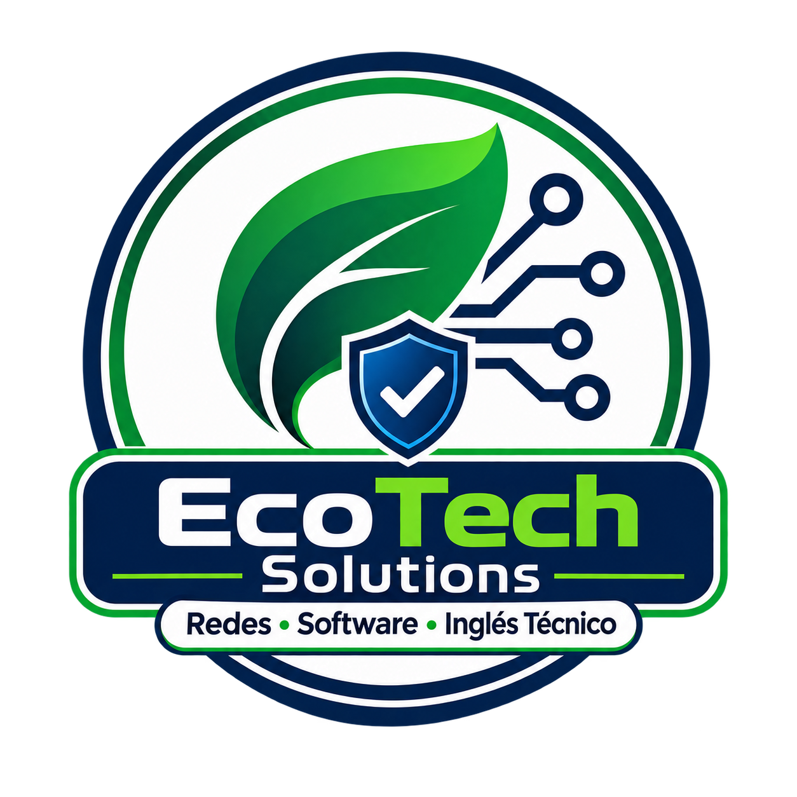

🌐
Configuración de red básica
Configuración de router, Wi-Fi, seguridad básica y conexión de dispositivos.
₡35.000
Por instalación básicaSoluciones tecnológicas cercanas para hogares, estudiantes y pequeños negocios: redes confiables, mantenimiento de equipos y aprendizaje del inglés técnico.
Conocer servicios
Un emprendimiento costarricense propuesto para acercar la tecnología a las personas y apoyar a pequeños negocios con soluciones claras, responsables y accesibles.
Brindar servicios de configuración y soporte de redes, mantenimiento de software y dispositivos, y formación en inglés técnico, con atención honesta, precios transparentes y uso eficiente de los recursos tecnológicos.
Ser una microempresa reconocida en la comunidad por su calidad de servicio, capacidad de innovación y aporte a la educación tecnológica y al uso responsable de los equipos.
Precios de referencia en colones costarricenses. El costo final puede variar según el diagnóstico y los materiales necesarios.
Configuración de router, Wi-Fi, seguridad básica y conexión de dispositivos.
Limpieza lógica, revisión de programas, actualizaciones y diagnóstico general.
Revisión inicial de fallos de hardware, software o conectividad y reporte de hallazgos.
Práctica de vocabulario de redes, soporte, manuales y atención al cliente.
Revisión de contraseñas, actualizaciones y configuración segura de red doméstica.
Instalación y configuración de programas legítimos y gratuitos o con licencia del cliente.
Un proceso simple para que cada cliente sepa qué se hará, cuánto costará y cuál será el resultado.
Recibimos la consulta, identificamos la necesidad y solicitamos información básica del equipo o red.
Explicamos el problema, presentamos opciones y confirmamos el precio antes de iniciar.
Realizamos el trabajo, probamos el resultado y damos recomendaciones para prevenir nuevas fallas.
Escribinos para solicitar información o coordinar un diagnóstico.
Contactar por WhatsAppContacto de demostración: agregue el número real de la empresa antes de entregar.